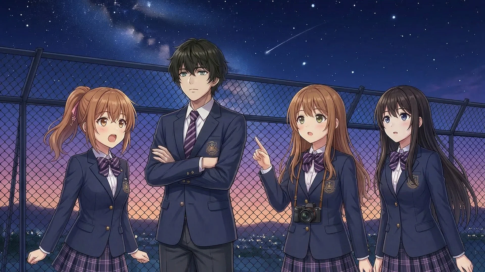

Story
Things left unsaid regain their outline beneath the stars.
For protagonist Isamu Kirishima, after school had slowly begun to lose its color. A promise on the rooftop, a silence left in a clubroom, and a profile waiting for dawn start time moving again.
Choices in the common route branch into the stories of Sakura Sakurazaki, Kotoha Hanazono, and Mahiru Tsukiyono. Each route touches a different lie, a different wish, and the distance between two hearts.



Official X
Official Posts for #AfterSchoolStella
News, updates, and after-school echoes will appear here. Posts from the official account will carry the hashtag and let the atmosphere of the story spread little by little.
New posts tagged #放課後のステラ can be viewed on X search.